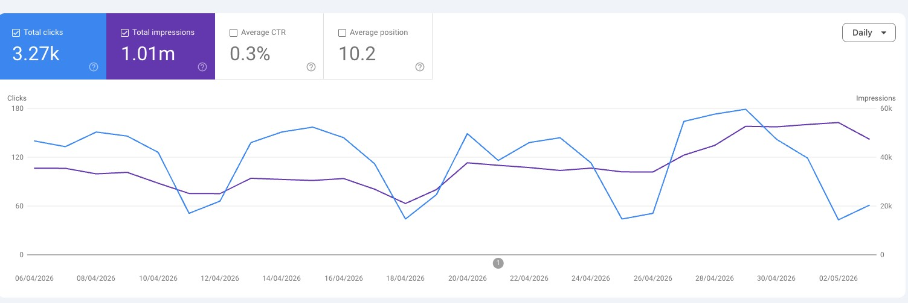

Google Search Console disclosed (Apr 27, 2026) that a logging error over-reported impressions, CTR, and average position from May 13, 2025 to Apr 27, 2026. After the fix you "may notice a decrease in impressions" — meaning earlier numbers were inflated. Clicks were NOT affected.
Implication for this report: the MoM changes on Impressions (-40.1%), CTR, and Average Position are largely a data correction, not a real performance shift. The clicks decline (-30.2%) is genuine and is the focus of investigation. Impressions/CTR/position are shown for completeness but should be ignored for MoM interpretation. We recommend resuming MoM tracking on those metrics from the May 2026 report onward (first full post-fix month).
A separate, smaller issue (Apr 16–27) affected only "Job listing" / "Job details" search appearance types — not relevant to gofreight.com.
The headline is the click decline (-30.2% MoM, 5,067 → 3,535). This is the only KPI not contaminated by the GSC logging bug, and is the focus of this report. April was a heavy publishing month — 25 pieces shipped, weighted toward glossary builds (16 of 25) on April 20–22.
The click loss is concentrated in Blog (the volume engine that carried Q1): 2,890 → 1,476 clicks. Investigation (see Blog Decline Investigation section) shows ~32% of the loss is migration-related — old /blog/glossary/* and /blog/education/*incoterms* URLs were retired in favor of new /glossary/* pages that haven't yet absorbed the rankings. The remaining ~68% is a mix of genuine ranking decline on key commercial pages (best-tms-software, best-freight-management-software, customs clearance) and category-wide search-volume erosion (yearly volume on every core term is down -19% to -86% — see Section 10).
Glossary clicks grew +173% (76 → 208) as the freshly-published cluster started to land. Late April showed early recovery: in week 4 (Apr 22–28) /blog clicks rebounded +18.7% WoW, driven almost entirely by one page (custom-clearance-usa-for-goods, +41 of +58) that benefitted from internal links from the new glossary cluster. This is the May playbook: replicate the internal-linking pattern across the remaining bleeding pages.
Hubspot publish time in 2026-04. Verified 2026-05-06: all 25 production URLs returned HTTP 200. Breakdown: 13 Blog Pages, 11 Glossary Pages, 1 Product Attribute Page (Customer Portal, Apr 21).Clicks dropped 30.2% MoM (5,067 → 3,535). This is the only fully-trusted metric in the report (GSC bug did not affect clicks). The decline is concentrated in Blog (-49% clicks). Investigation in the Blog Decline section shows ~32% is migration-related (old URLs retired, new URLs not yet absorbing) and ~68% is genuine — rank loss on commercial-intent core keywords plus category-wide search-volume erosion.
Despite the absolute-position uncertainty from the bug, the relative MoM shifts are real and informative: "freight forwarding software" 4.8→7.1, "best freight forwarding software" 8.0→16.0, "air freight forwarding software" 3.2→8.4. The commercial-intent core terms bled position. This drives the click decline and is the structural issue to address in May.
Glossary clicks grew 76 → 208 as the freshly-published cluster (16 new pages Apr 20–22) started landing. This is a leading indicator that the April content investment will compound in May/June. Late-April WoW data shows /blog also rebounding (+18.7% week-over-week) driven by internal linking from the new glossary pages.
Per the GSC logging bug (May 2025 – Apr 27, 2026), these metrics over-reported during March and most of April. We are not interpreting MoM movement on these metrics this period. Resume MoM tracking from the May 2026 report (first full post-fix month).
interval=daily + type=COMPETITOR + pageSize=500 against the public API, we got the full 30 days of daily visibility for all 8 tracked competitors. The trended charts in the AEO section reflect this complete dataset.The May plan is structured around three initiatives: (1) Commercial Intent Keyword recovery via homepage E-E-A-T restoration; (2) /Blog optimization replicating the late-April internal-link playbook; (3) AEO listicle optimization. Detailed plan with owners and tasks follows in the dedicated section.
April 2026's traffic decline is not an isolated GoFreight problem — it is the result of two simultaneous algorithm shifts: (1) the Google March 2026 Core Update (rolled out 2026-03-27, completed mid-April) and (2) OpenAI / Google AI Overview / Claude tightening citation criteria. Every direct competitor (Magaya, GoComet, even Cargowise's blog) softened in April per Ahrefs. Understanding what changed under the hood is essential to choosing the right May actions — which is why the plan below leans into E-E-A-T and quality-listicles instead of chasing volume.
Source: Lily Ray, VP of SEO and AI Search at Amsive (and founder of new consultancy Algorithmic), on The Page 2 Podcast, April 20, 2026.
"Tactics that work today, like scaled listicles, might be setting companies up for long-term failure... I would bet on E-E-A-T being the single framework that drives success long-term for both search engines and AI search platforms."
What this means: Listicles still work for AI citations today — that's why we recommend optimizing them. But they need to be quality listicles with named authors, real expertise, verified data, and quantified outcomes — not pure volume plays. Pages with weak E-E-A-T (Experience, Expertise, Authoritativeness, Trust) are the ones getting hit by core updates. This is why Initiative 1 (homepage E-E-A-T restoration) and Initiative 3 (listicle quality upgrade) are paired.
What's changed: ChatGPT 5.3 and 5.4 (rolled out April 2026) and Claude have started actively reducing citations of low-quality / over-optimized content.
"If you ask Claude 'who's the best SEO agency,' it'll say 'Beware — this is a heavily spammed category, so we're going to look beyond that and get you a better answer.' That's already starting to happen. ChatGPT 5.3/5.4 are also clearly trying to mitigate manipulation and spam." — Lily Ray, April 2026
What this means: The same SEO games that worked on Google a year ago (keyword stuffing, prompt injection in HTML, fake review nets) are now actively penalized by AI search. The strategy that wins is third-party authority — citations on G2/Capterra, expert quotes in FreightWaves/JOC, real customer-name reviews. Initiative 1 (editorial backlink program) and Initiative 3 (G2/Capterra refresh) target this directly.
Source: Google engineer's AEO article (highly-discussed on r/MarketingandAI, 32 upvotes, April 17, 2026), advocating "token efficiency, markdown + answer-first content."
What this means in practice:
What this means for GoFreight content: Listicle refreshes in May should restructure for this format. The #1 pick stated up top with reason; comparison tables (not narrative paragraphs); FAQ schema; tightened intros.
What's changed: ChatGPT's "fan-out search" pattern (where it does multiple sub-queries to answer one user question) increasingly fetches the brand's own website for canonical info — not just third-party sources.
"There's some new trends with how ChatGPT does fan-out searches where they're actually looking specifically at the brand's website to get the information from the brand itself. So at the very least you want to control the conversation there." — Lily Ray, April 2026
What this means: When a buyer asks ChatGPT "what is GoFreight and what does it do?", ChatGPT now checks gofreight.com directly. The homepage matters MORE for AEO than ever, not less. A homepage that clearly states the category, the differentiators, named customers, quantified outcomes, and a category-defining FAQ ("What is Freight Forwarding Software?") is the highest-leverage asset for AEO. This is why Initiative 1's homepage E-E-A-T restoration is doubly important — it serves both Google rankings AND AI citations.
Each of the four shifts above points in the same direction: real expertise from real people at real companies, presented in clean structure, with third-party validation. Google rewards it. ChatGPT cites it. Claude trusts it. The opposite — scaled listicles, anonymous content, removed customer names, hidden experts — is what every algorithm is actively penalizing right now. The May plan is built around restoring those signals (Initiative 1), reinforcing them with internal-link authority (Initiative 2), and applying them at scale to the listicle inventory (Initiative 3).
Why: The Google March Core Update (rolled out 2026-03-27, completed mid-April) coincided with two on-site changes that compounded the impact: a March 24 title-tag rewrite (added "AI-Powered" prefix, pushing the keyword "Freight Forwarding Software" out of the leading position) and an April 7 homepage redesign (removed three named testimonials with quantified outcomes, the "Service-Quality Flywheel" framework, and five case study cards). Result: "Freight Forwarding Software" dropped from position 1 to position 14; "Freight Forwarder Software" 2 → 5. Logitude World rose from unranked to position 1, having added a "What is Freight Forwarding Software?" FAQ. They also have 2.7× our editorial backlink count (223 vs 82, of which ~60 of ours are spam).
Key actions (May):
→ Full action plan doc (Hypotheses 1–3 verified via HTML diff + Ahrefs)
Why: Late-April /blog clicks rebounded +18.7% WoW (W4 Apr 22–28 vs W3 Apr 15–21), driven almost entirely by one page: /blog/education/how-to-do-custom-clearance-in-usa-for-goods.html (+41 of +58). Position improved 8.6 → 7.6 with no content change — the lift came from internal links from the new glossary cluster published April 20–22 (Customs Clearance, ISF, Demurrage, Bill of Lading, etc.). This is the cheapest, fastest, repeatable lever.

Key actions (May):
Why: AEO is on a different algorithm than Google organic. Workduo confirms GoFreight's AI Overview SOV is stable at 19.3% (avg) — no MoM degradation despite the Google ranking bleed. The AI search algorithms are picking different signals than classic Google SEO right now. Our observation: listicles are still topping AI citations — just different listicles than before. The May play is to upgrade our listicle inventory while the format still wins.
Word on the street (last 30 days research):
Key actions (May):
| # | Action | Initiative | Owner | Impact |
|---|---|---|---|---|
| 1 | Update homepage title + meta (lead with keyword, keep AI-Powered branding) | 1 — Commercial | Marketing/Web | Restores keyword-leading signal in title |
| 2 | Restore named testimonials section (3 customers, 9 stat cards) | 1 — Commercial | Marketing/Web | Trustworthiness E-E-A-T |
| 3 | Restore Service-Quality Flywheel (or AI-themed equiv) with 4 quantified cards | 1 — Commercial | Marketing/Web | Expertise E-E-A-T |
| 4 | Restore 3 case study cards on homepage | 1 — Commercial | Marketing/Web | Experience E-E-A-T |
| 5 | Add category FAQ ("What is Freight Forwarding Software?" + 2 more) | 1 + 3 | SEO/Content | Matches Logitude pattern; AEO-citable |
| 6 | Submit disavow file for 50–60 spam URLs | 1 — Commercial | SEO | Removes drag on trust profile |
| 7 | Launch editorial backlink program (logistics pubs, software review sites) | 1 + 3 | SEO/PR | Long-term authority moat |
| 8 | Replicate internal-linking from glossary cluster to 10 declining blog posts | 2 — Blog | Content | Cheap/fast/replicable lever; W4 proven |
| 9 | Refresh top 5 commercial decliners (best-tms-software, best-fms, mastering-fob, customs-clearance, cargowise-pricing) | 2 — Blog | Writer | Recover position bleed on lead keywords |
| 10 | Verify 301 redirects on 7 migrated URLs | 2 — Blog | Tech SEO | Stop link-equity leak (~99 clicks/wk) |
| 11 | Listicle quality upgrade — author bylines, 2026 verified data, schema, outcome stats (6 listicles) | 3 — AEO | Writer + SEO | Defend AEO citations as algorithms tighten |
| 12 | G2/Capterra profile refresh + customer review drive | 3 — AEO | PR/Social | Third-party citation depth |
| 13 | Automate Workduo daily pull (cron job using known params: interval=daily, type=COMPETITOR, pageSize=500) | 3 — AEO | AEO ops | Unbroken 60-day trend in May report |
| 14 | Push GoFreight to publish 10 remaining /product/* Product Attribute Pages | 1 + 3 | GoFreight product team sync | Highest commercial intent capture |
| 15 | Map GSC queries → content gaps; align FAQs to real customer search intent | 2 + 3 | SEO/Content | Closes 785-keyword competitor gap (88,670 vol/mo) |
Items 1–7 are on-page work, completable in days. Items 8–11 are content sprints, 2–4 weeks. Items 12–15 are 30–90 day initiatives with compounding returns.
| Segment | Apr Clicks | Mar Clicks | Δ Clicks | % Change | Apr Impr | Mar Impr | Δ Impr | % Change |
|---|---|---|---|---|---|---|---|---|
| Exact Brand | 967 | 1,052 | -85 | -8.1% | 2,823 | 3,048 | -225 | -7.4% |
| Branded Related | 201 | 231 | -30 | -13.0% | 926 | 1,107 | -181 | -16.4% |
| Non-Branded | 476 | 841 | -365 | -43.4% | 300,348 | 252,238 | +48,110 | +19.1% |
| TOTAL (visible queries) | 1,644 | 2,124 | -480 | -22.6% | 304,097 | 256,393 | +47,704 | +18.6% |
| % of date-dim canonical | 46.5% | 41.9% | — | — | 29.03% | 14.67% | — | — |
| Subfolder | Apr Clicks | Mar Clicks | Δ Clicks | % Change | Apr Impr | Mar Impr | Δ Impr | Trend |
|---|---|---|---|---|---|---|---|---|
| Homepage | 1,400 | 1,603 | -203 | -12.7% | 42,301 | 62,166 | -19,865 | ▼ |
| Blog | 1,476 | 2,890 | -1,414 | -48.9% | 965,623 | 1,686,892 | -721,269 | ▼ |
| Glossary | 208 | 76 | +132 | +173.7% | 54,331 | 18,416 | +35,915 | ▲ |
| Solutions | 12 | 15 | -3 | -20.0% | 4,640 | 14,802 | -10,162 | ▼ |
| Pricing | 57 | 57 | +0 | +0.0% | 5,164 | 4,489 | +675 | — |
| Customers | 1 | 2 | -1 | -50.0% | 740 | 1,089 | -349 | ▼ |
| Get Demo | 4 | 3 | +1 | +33.3% | 819 | 602 | +217 | ▲ |
| Product | 2 | 0 | +2 | +0.0% | 1,039 | 0 | +1,039 | ▲ |
| Archive | 29 | 76 | -47 | -61.8% | 5,844 | 14,220 | -8,376 | ▼ |
| Support | 321 | 331 | -10 | -3.0% | 18,257 | 19,276 | -1,019 | ▼ |
| Other | 122 | 111 | +11 | +9.9% | 23,614 | 23,627 | -13 | ▲ |
| SUBTOTAL (all subfolders) | 3,632 | 5,164 | -1,532 | -29.7% | 1,047,517 | 1,747,346 | -699,829 | — |
| % of Site Total (date-dim) | 102.7% | 101.9% | — | — | 100% | 100% | — | — |
GA4 Application Default Credentials require workspace-policy allowlist + re-authorization (in progress). Once auth is restored, this section will populate with sessions, form starts, form submits, and conversion rates by demo page (/get-demo, /go-get-demo-ppc, /get-demo-ai). The May report will include April→May conversion comparison once the auth path is stable.
| # | Page URL | Apr Clicks | Mar Clicks | Δ Clicks | Apr Impr | Mar Impr | Δ Impr |
|---|---|---|---|---|---|---|---|
| 1 | / (homepage) | 1,400 | 1,603 | -203 | 42,301 | 62,166 | -19,865 |
| 2 | /blog/education/how-to-do-custom-clearance-in-usa-for-goods.html | 178 | 268 | -90 | 89,363 | 112,093 | -22,730 |
| 3 | [support]/hc/en-us/articles/14378165476751-Check-Bond-Status-Importer-Bond-Detai | 142 | 143 | -1 | 2,497 | 2,316 | +181 |
| 4 | /blog/education/top-10-freight-forwarding-training-courses-in-2024.html | 114 | 152 | -38 | 6,771 | 8,279 | -1,508 |
| 5 | /blog/industry-insights/top-10-reasons-of-shipping-delays.html | 84 | 120 | -36 | 35,249 | 58,515 | -23,266 |
| 6 | /glossary/fenix-marine-terminal-tracking | 58 | 8 | +50 | 8,089 | 2,637 | +5,452 |
| 7 | /blog/education/10-best-books-on-freight-forwarding-to-read-in-2021.html | 57 | 54 | +3 | 1,492 | 1,875 | -383 |
| 8 | /pricing | 57 | 57 | +0 | 5,162 | 4,489 | +673 |
| 9 | /blog/education/shipping-container-dimensions-everything-you-need-to-know.html | 51 | 70 | -19 | 60,363 | 75,702 | -15,339 |
| 10 | /glossary/savannah-terminal-tracking | 44 | 12 | +32 | 4,326 | 2,325 | +2,001 |
| TOP 10 SUBTOTAL | 2,185 | 2,487 | -302 | — | — | — | |
| % of Site Total (date-dim) | 61.8% | 49.1% | — | — | — | — | |
| Page URL | Type | Apr Impr | Mar Impr | Δ Impr | Apr Clicks |
|---|---|---|---|---|---|
| /blog/best-tms-trucking-companies | Blog | 12,346 | 3,132 | +9,214 | 18 |
| /blog/best-logistics-crm-software | Blog | 8,586 | 0 | +8,586 | 34 |
| /glossary/fenix-marine-terminal-tracking | Glossary | 8,089 | 2,637 | +5,452 | 58 |
| /glossary/bayport-container-terminal | Glossary | 5,898 | 661 | +5,237 | 16 |
| /glossary/fob-shipping-point-vs-fob-destination | Glossary | 4,518 | 0 | +4,518 | 4 |
| /glossary/everything-freight-forwarders-need-to-know-about-the-electronic-cargo- | Glossary | 3,927 | 0 | +3,927 | 1 |
| /glossary/garden-city-terminal-tracking | Glossary | 3,553 | 0 | +3,553 | 23 |
| /glossary/what-is-the-gross-margin-of-freight-forwarders.html | Glossary | 3,081 | 0 | +3,081 | 6 |
| /tracking-portal | Tracking | 2,482 | 0 | +2,482 | 37 |
| /blog/best-tms-small-business | Blog | 8,861 | 6,819 | +2,042 | 16 |
| # | Keyword | Apr Clicks | Mar Clicks | Δ | Position | Type |
|---|---|---|---|---|---|---|
| 1 | gofreight | 683 | 725 | -42 | 2.4 | Exact Brand |
| 2 | go freight | 274 | 317 | -43 | 4.8 | Exact Brand |
| 3 | go freight login | 67 | 114 | -47 | 1.2 | Branded Related |
| 4 | gofreight login | 52 | 48 | +4 | 1.0 | Branded Related |
| 5 | gofrieght | 26 | 13 | +13 | 1.8 | Non-Branded |
| 6 | freight forwarding software | 13 | 20 | -7 | 7.1 | Non-Branded |
| 7 | gofreight api | 13 | 9 | +4 | 1.0 | Branded Related |
| 8 | gofreight pricing | 12 | 7 | +5 | 9.3 | Branded Related |
| 9 | nvocc license | 10 | 9 | +1 | 2.5 | Non-Branded |
| 10 | go frieght | 9 | 6 | +3 | 1.1 | Non-Branded |
| 11 | fenix marine terminal tracking | 8 | 9 | -1 | 5.1 | Non-Branded |
| 12 | garden city terminal container tracking | 8 | 9 | -1 | 8.5 | Non-Branded |
| TOP 12 SUBTOTAL | 1,175 | 1,286 | -111 | — | — | |
| % of Site Total (date-dim) | 33.2% | 25.4% | — | — | — | |
| Keyword | Search Volume | GSC Mar Pos | GSC Apr Pos | Δ Pos | Mar Clicks | Apr Clicks | DFS Pos | Ranking URL |
|---|---|---|---|---|---|---|---|---|
| freight forwarding software | 320 | 4.8 | 7.1 | ▼ 2.3 | 20 | 13 | 3 | / |
| freight management software | 260 | 7.4 | 9.3 | ▼ 1.9 | 9 | 3 | 5 | /blog/best-freight-management-software |
| freight management system | 320 | 9.0 | 8.4 | ▲ 0.6 | 5 | 3 | 7 | /blog/best-freight-management-software |
| freight management system software | 70 | 6.9 | 7.3 | — flat | 0 | 1 | 2 | /blog/best-freight-management-software |
| best freight forwarding software | 40 | 8.0 | 16.0 | ▼ 8.0 | 1 | 0 | 5 | / |
| best freight management software | 0 | 5.1 | 6.7 | ▼ 1.6 | 1 | 2 | — | — |
| air freight forwarding software | 20 | 3.2 | 8.4 | ▼ 5.2 | 0 | 0 | 2 | / |
| global freight management system | 30 | 12.5 | 13.2 | ▼ 0.7 | 1 | 0 | 10 | /blog/best-freight-management-software |
| ocean freight management software | 50 | 13.2 | 12.2 | ▲ 1.0 | 0 | 1 | 41 | / |
| Total Search Volume | 1,110 | Sum of monthly search volume across 9 core keywords | ||||||
| Keywords Ranking | 9/9 | 100% of core keyword set has GSC impressions in April | ||||||
| Brand | Google AIO | ChatGPT | All Platforms | Total Mentions | Avg Position |
|---|---|---|---|---|---|
| CargoWise | 36.4% | 33.3% | 33.5% | 896 | 1.42 |
| Magaya Supply Chain | 39.8% | 23.7% | 30.0% | 816 | 2.40 |
| Descartes Forwarder Enterprise | 32.7% | 29.7% | 28.4% | 607 | 2.56 |
| GoFreight | 31.6% | 17.9% | 26.6% | 1097 | 1.70 |
| GoComet | 5.1% | 3.5% | 6.1% | 112 | 3.11 |
| Shipthis | 5.4% | 4.3% | 5.9% | 108 | 3.11 |
| Freightview | 1.4% | 3.3% | 5.0% | 90 | 3.06 |
| Neurored TMS & SCM | 2.3% | 2.4% | 2.4% | 43 | 3.12 |